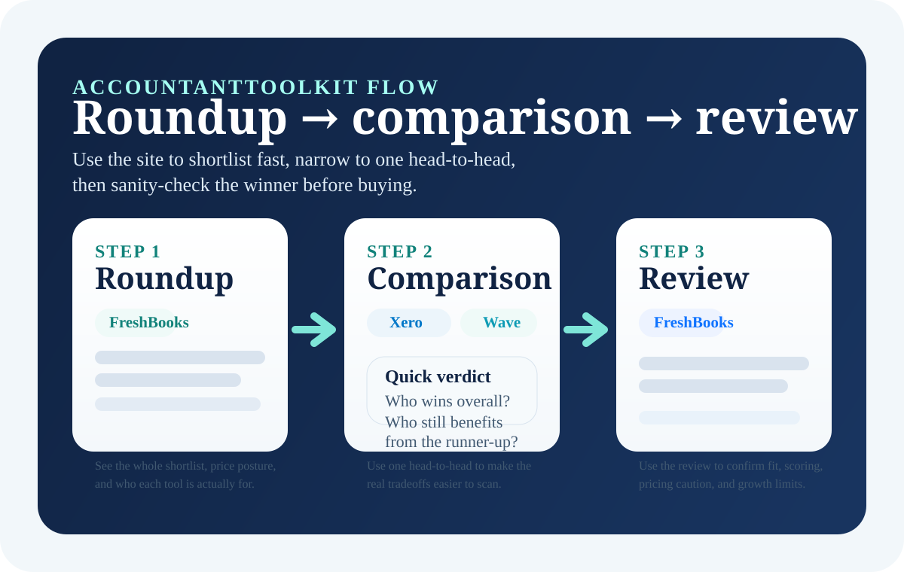

When a vendor relies on rotating promos, region-specific pricing, or usage-based rules, the page tells readers to verify the current offer instead of freezing stale numbers.
Independent software intelligence for freelance accountants
Choose accounting software with the calm of a shortlist, not a sales funnel.
AccountantToolkit is built for freelancers and bookkeepers who want a faster route from noisy vendor pages to one confident buying decision around books, invoicing, receipts, and workflow fit.
Roundup to comparison to review
Static pages with fast load times
Editorial policy and disclosures live

Start Here
Pick the page that matches the real bottleneck.
The premium version of this site should feel like a guided floor plan. Start with the broad decision page, then move into the cluster that matches the pain point.
Guide
How to choose accounting software
The fastest first click when the market still feels broad and you need a calm framework before opening product pages.
RoundupBest accounting software for freelancers
Compare Xero, Wave, FreshBooks, Zoho Books, QuickBooks, and Bonsai around bookkeeping depth and workflow fit.
RoundupBest bookkeeping software for solo accountants
Use this when reconciliation, reporting, and long-term bookkeeping usability matter more than surface polish.
RoundupBest invoicing software for freelance accountants
See which tools actually help service firms get invoices out, handle client limits, and keep billing friction low.
RoundupBest receipt tracking software
Review the tools built for faster submission, document extraction, and less cleanup after the capture step.
Use the site properly
Shortlist wide, narrow once, confirm once.
Most software decisions do not need twelve tabs and three hours of price checking. This site is designed to compress the decision without flattening the tradeoffs.
- 1Open the roundup that matches your current pain point.
- 2Use one head-to-head comparison to see who really wins and why.
- 3Use one review page to check setup friction, fit, and limitations before you buy.
Comparisons
Head-to-head pages with an actual point of view.
Comparison pages should answer who wins overall, who should still choose the runner-up, and where pricing or setup tradeoffs deserve caution.
Comparison
Xero
Wave
Xero vs Wave
Xero wins on bookkeeping depth and control. Wave still matters when the no-cost entry path matters more than long-term reporting depth.
Comparison
QuickBooks
Xero
QuickBooks vs Xero
QuickBooks wins familiarity and ecosystem gravity. Xero usually wins when you value cleaner bookkeeping control and calmer long-term operations.
Comparison
Bonsai
FreshBooks
Bonsai vs FreshBooks
Bonsai is stronger as a client-ops system. FreshBooks is safer when invoicing polish and accounting practicality matter more.
Comparison
Zoho Books
QuickBooks
Zoho Books vs QuickBooks
Zoho Books usually wins on value and control. QuickBooks still matters when accountant familiarity and ecosystem gravity decide the purchase.
Reviews
Product reviews written for practice owners, not vendor decks.
The review cluster focuses on fit, friction, limits, and long-term usability instead of pretending every tool deserves the same conclusion.
Review
FreshBooks review
Excellent invoicing and client-facing polish. Better for running a service business than for replacing a deeper accounting system.
ReviewBonsai review
One of the cleanest all-in-one operating systems for solo firms, but still not a full substitute for deeper accounting software.
ReviewXero review
A serious bookkeeping platform with strong reconciliation, stronger reporting, and a better path once a practice grows up.
ReviewWave review
A practical free-start option for simple workflows, with clear tradeoffs once bookkeeping and reporting needs become heavier.
ReviewQuickBooks review
Strong ecosystem familiarity and accountant adoption, but not always the cleanest workflow or the most elegant value.
ReviewZoho Books review
One of the strongest value-led accounting options for freelancers who want real depth without paying enterprise-style prices.
Editorial approach
Built to finish a decision, not prolong the scroll.
This site deliberately avoids fake freshness, messy vendor worship, and price certainty where the underlying offers are too unstable to trust.
Pages are written around bottlenecks like invoicing, receipt capture, reconciliation, reporting, and client operations, not just brand popularity.
Readers can see the about page, editorial policy, affiliate disclosure, and contact page without digging through a footer maze.
For standards and disclosures, see About, Editorial Policy, and Affiliate Disclosure.
FAQ
Questions buyers usually have on the homepage
The homepage should answer the first decision quickly: where to start and which page to read next.
Where should freelancers start on AccountantToolkit?
Start with the page that matches the real bottleneck. Use the accounting roundup for stronger books, the invoicing roundup for billing and service workflow, the receipt roundup for document capture, or a comparison page if your shortlist is already narrow.
What is the best page for bookkeeping software?
The best starting point for bookkeeping-focused buyers is best bookkeeping software for solo accountants, then the Xero review or a comparison like QuickBooks vs Xero.
What if invoicing is the main pain point?
If invoicing is the main pain point, start with best invoicing software and then narrow into comparisons like Wave vs FreshBooks or Bonsai vs FreshBooks.
How should buyers use the site to decide faster?
The fastest path is usually roundup first, then one comparison, then one review. That keeps the research focused while still giving enough detail to sanity-check the winner.
Need the shortest route to a confident shortlist?
Start with the guide if the decision is still broad, or jump straight into the roundup for the pain point that is costing the most time every week.